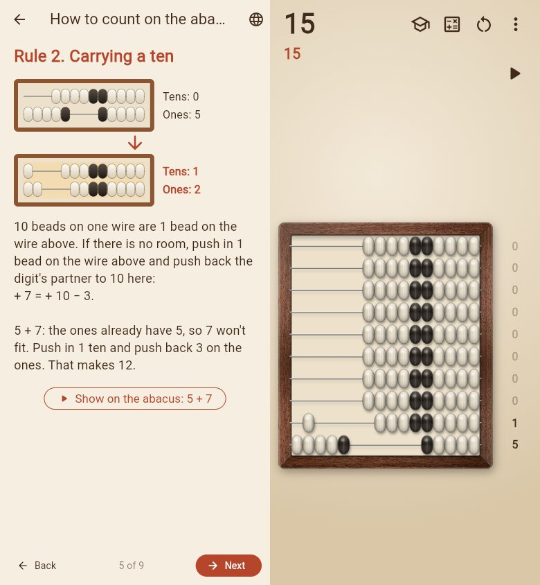

A learning abacus for children aged 6 and up: realistic wooden abacus with real physics and sound, step-by-step examples and school exercises in addition and subtraction. Works fully offline. English, Deutsch, Français, Español, Русский.
